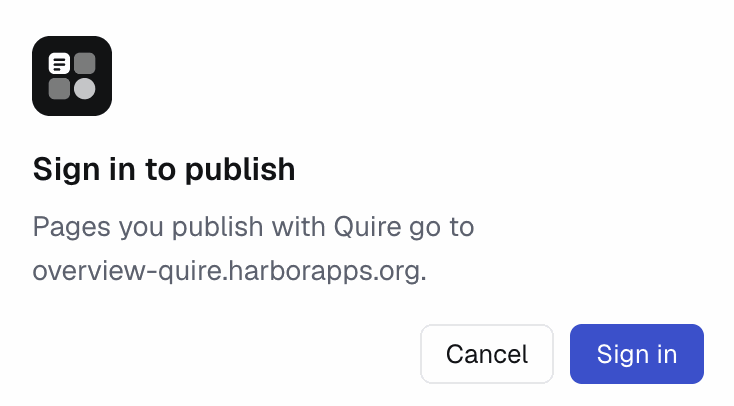
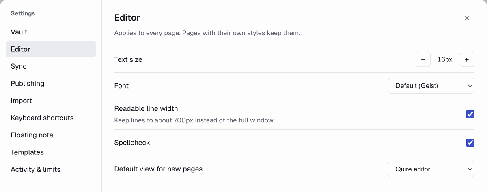
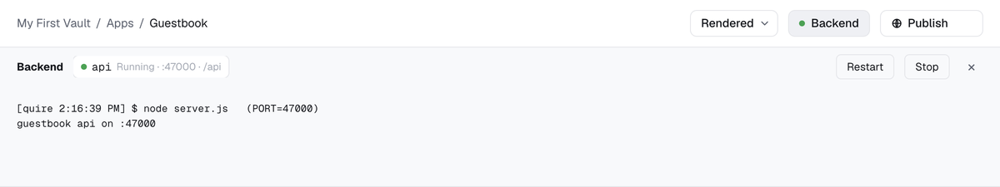

Noteblock is a notebook where every page is a small web app. A page can be plain text like this one, a Markdown note, or HTML with its own scripts and its own saved data.
Each page in the sidebar is a folder in your vault with a small .noteblock file naming its entry, usually index.html or index.md. Scripts, styles and images in the folder are served next to the page. Data a page saves goes in its data/ folder on this computer and stays out of git.
Click anywhere in the text and type. Type / at the start of an empty line for headings, lists, quotes, code, a divider, or another page embedded in this one. Select text to make it bold, italic, a link or a heading.
Turn on Source next to Pages in the sidebar to see every file in each page and open any of them.
| Keys | Does |
|---|---|
| ⌘PCtrl+P | Command palette: find a page or run a command |
| ⌘NCtrl+N | New page |
| ⌘⌥NCtrl+Shift+A | New page from a template |
| ⌘⇧NCtrl+Shift+N | New window |
| ⌃⌘NCtrl+Shift+D | New folder |
| ⌘TCtrl+T / ⌘WCtrl+W | New tab / close tab |
| ⌘⇧[Ctrl+Shift+[ / ⌘⇧]Ctrl+Shift+] | Previous / next tab |
| ⌘ECtrl+E | Switch view: Noteblock editor, Rendered, Source + preview |
| ⌘SCtrl+S | Save text edits on a page with a build step |
| ⌘,Ctrl+, | Settings |
| ⌘⌥JF12 | Inspect the page you're on |
| ⌘⌥ICtrl+Shift+I | Developer tools for Noteblock itself |
| ⌘⇧SpaceCtrl+Shift+Space | Show or hide the floating note, from any app |
Change any of them in Settings → Keyboard shortcuts.
The picker in the top bar, or ⌘ECtrl+E, switches how a page opens. Noteblock editor lets you edit the text in place. Rendered shows the page running as it would in a browser, which suits pages that are mostly an app. Source + preview puts the page's file next to a live preview. The same menu can make the current view the page's default.
Pages built with Vite or another build step rebuild when you save, so their text edits wait for ⌘SCtrl+S. Everything else saves as you type.
The Publish button puts the page on the web at a link anyone can open. With Noteblock hosting it lands at <name>.noteblock.ai; the first time, Noteblock asks you to sign in. After that the button shows Live, or Changes not live when you've edited since, and its menu has Open, Copy link, Publish changes and Unpublish.

To publish to your own Cloudflare account instead, turn on Settings → Publishing → Self-hosting and connect Cloudflare there. The page goes up as a Worker in your account.
Press ⌘⇧SpaceCtrl+Shift+Space in any app to open a small note that stays on top of your other windows. Press it again, or Esc, to hide it. It's a normal page in this vault, called Floating note until you pick another one, so whatever you jot down is saved and synced like everything else.
Press ⌘PCtrl+P inside it to switch to a different page. Settings → Floating note changes the shortcut or turns it off. Window tools like Raycast or Rectangle can move and resize it.
Open Settings with ⌘,Ctrl+,.

| Vault | Rename or move this vault, or open another one. |
| Editor | Text size, font, width, spellcheck and the default view. |
| Sync | Push the vault's history to a private git repo and pull it on another computer. |
| Publishing | Your Noteblock account and Cloudflare self-hosting. |
| Import | Bring in an Obsidian vault, claude.ai artifacts, or .html and .md files. |
| Keyboard shortcuts | Rebind any shortcut, and choose whether a page can take one over. |
| Floating note | Which page the floating note shows, and its shortcut. |
| Templates | The pages ⌘⌥NCtrl+Shift+A copies from. |
| Activity & limits | Memory and CPU for every page and backend, and the limits Noteblock enforces. |
A page can run its own server. Its .noteblock file names the command, like "backend": {"run": "node server.js"}, and Noteblock runs it from the page's backend/ folder. The page reaches it at api/…. It starts when you open the page and stops after 15 minutes without use. Apps / Guestbook is a small example.
A page with a backend gets a Backend pill in the top bar. Its dot is green while everything runs and red after a crash. Click it for each process's port and log, with Restart and Stop. View → Backend Logs opens the same panel.

When a page's scripts throw, a pill such as "2 errors" appears in the top bar. It lists each error with the file and line it came from, and clears when the page reloads. If a page stops responding or crashes, a card covers it with Reload page and Open source.
Settings → Activity & limits shows what every page and backend is using, with Stop, Restart and Logs for each backend. Its limits stop a backend that runs away with memory, CPU or processes.
⌘⌥JF12 opens Chrome DevTools for the page you're on: its elements, console, files and network requests, including calls to its backend. Right-click an embedded page and choose Inspect to get one for just that embed. ⌘⌥ICtrl+Shift+I opens DevTools for Noteblock's own window, for when the app itself misbehaves.
These are the pages in this vault that run something on your Mac or use the network.
| Page | Runs on your Mac | Network |
|---|---|---|
| Apps / Guestbook | node server.js in its backend/ folder, while the page is in use | None. The server only accepts connections from this Mac. |
| Apps / Blastside | A build (pnpm install, then Vite) after you change its files | After you press Play, it connects to the Noteblock game server at play.noteblock.ai. A build downloads packages from the npm registry. |
| Apps / Focus timer | A build (pnpm install, then Vite) after you change its files | A build downloads packages from the npm registry. |
| Apps / Reading list | A build (pnpm install, then Vite) after you change its files | A build downloads packages from the npm registry. |
Every other page is plain HTML or Markdown, and no page here reads files outside its own folder.
Noteblock has no AI built in. Pages are plain files in a folder, so any editor or coding agent can change them. The quire command marks a page as being edited while that happens:
quire edit "Kyoto trip/Trip budget" -m "Add a paid-by column"
# change the files in the folder it prints
quire done "Kyoto trip/Trip budget"Until quire done, the page is read-only here and shows the version from before the edit. Every change is a git commit in the vault, so quire log shows what changed and anything can be undone.